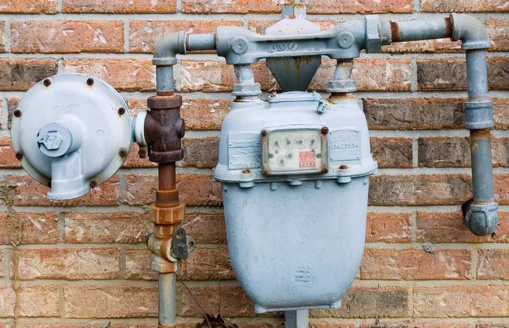

When it comes to gas-fueled appliances, most homeowners think in terms of pressure — PSI (pounds per square inch). But if you’ve ever looked at a natural gas or propane appliance manual, you’ve probably noticed something different: gas pressure is listed in “inches of water column” (often abbreviated as “in. W.C.”).

This unique measurement might seem confusing at first, but it’s actually critical for ensuring your appliances run safely and efficiently. Here’s what it means, why it matters, and how the experts at Angle Stop Plumbing make sure your gas systems are perfectly set up for optimal performance.
🔬 What Is “Inches of Water Column”?
“Inches of water column” is a unit used to measure very low levels of gas pressure — lower than what you’d measure in pounds per square inch. It’s based on the amount of pressure required to lift a column of water by a certain number of inches.
To put it in perspective:
- 1 PSI = 27.7 inches of water column
- Most residential natural gas systems operate around 7 inches of water column (about 0.25 PSI)
- Propane systems typically operate between 10–11 inches of water column (about 0.4 PSI)
That means gas appliances don’t operate under “high pressure”— they require very small, precise pressure differences to function correctly.
⚙️ Why Inches of Water Column Are Used for Gas Systems
Gas appliances like furnaces, water heaters, stoves, and dryers rely on steady, consistent fuel flow to maintain flame stability and efficiency. Since these appliances run at such low pressures, measuring in PSI would be too coarse to be accurate.
Water column measurement is much more sensitive — it allows technicians to fine-tune gas flow with precision, ensuring the appliance receives just the right mixture of fuel and air. This directly affects:
- Burner efficiency and fuel economy
- Flame performance (prevention of soot or incomplete combustion)
- Safety, by minimizing the risk of carbon monoxide
- Appliance longevity through consistent and balanced operation
Using the correct gas pressure ensures your system operates exactly as the manufacturer designed it to.
🔥 Natural Gas vs. Propane — Key Pressure Differences
While both fuels power similar appliances, propane and natural gas have different characteristics — and different required pressure levels.
- Natural gas is less dense, requiring a larger volume of gas at a lower pressure.
- Propane, on the other hand, is a denser fuel, burned in smaller volumes but at slightly higher pressure.
If an appliance is connected to the wrong gas type or not properly adjusted for the correct pressure:
- Flames can burn too hot or too weak
- Carbon buildup or incomplete combustion can occur
- Equipment can suffer damage
- And more importantly, safety risks (like gas leaks or carbon monoxide exposure) may arise
This is why having the correct settings for inches of water column is so crucial.
🧰 How Angle Stop Plumbing Ensures Proper Gas Supply
At Angle Stop Plumbing, our licensed technicians use specialized manometers to precisely measure gas line pressure in inches of water column. We verify every connection, adjustment, and valve setting to make sure your system is performing exactly as it should — no guesswork, no shortcuts.
Our services include:✅ Gas appliance installation (natural gas & propane)✅ Pressure testing and system calibration✅ Conversion and reconfiguration between gas types✅ Leak detection and safety verification
By ensuring your appliances receive the correct gas supply, we help:
- Maximize fuel efficiency
- Prevent damage from improper pressure
- Maintain warranty compliance
- Keep your family safe
💡 The Bottom Line
Measuring gas pressure in inches of water column isn’t just a technicality — it’s a matter of performance, safety, and precision. Whether you’re running natural gas or propane, the right gas supply pressure ensures your appliances operate efficiently and safely for years to come.
Trust the certified experts at Angle Stop Plumbing to check, calibrate, and maintain your gas systems the right way — with accuracy, care, and professionalism you can count on.
🚿 Ready to Check Your Gas Appliances?
If you’re upgrading a water heater, switching fuel types, or simply want peace of mind that your gas pressure is correct, Angle Stop Plumbing is here to help.
📞 Contact us today for professional gas plumbing services — because your comfort and safety start with precision.